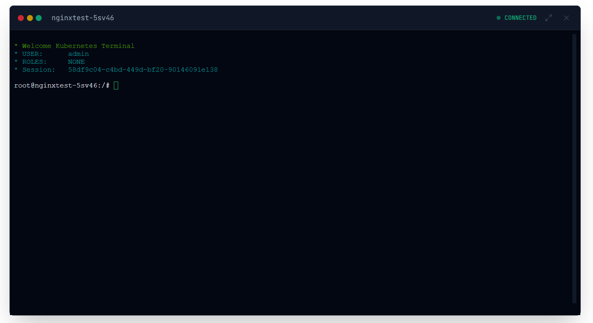

Terminal Exec Guard
Terminal Exec Koruması
Zero-trust execution environment. Every terminal shell requested by a user passes through the Great Firewall—a strict RegEx parser that blocks malicious injections by default.
Sıfır-güven (Zero-trust) çalıştırma ortamı. Bir kullanıcı tarafından istenen her terminal kabuğu (shell), kötü niyetli enjeksiyonları varsayılan olarak engelleyen katı bir RegEx ayrıştırıcısı olan Büyük Güvenlik Duvarı'ndan (Great Firewall) geçer.

Role-Based Command Authorization
Rol Tabanlı Komut Yetkilendirme
Configure precise command execution policies using RegEx patterns. Each role can be assigned specific command whitelists, ensuring users can only execute authorized commands within their permission scope.
RegEx desenleri kullanarak hassas komut yürütme politikalarını yapılandırın. Her role belirli komut beyaz listeleri atanabilir, böylece kullanıcıların yalnızca yetki kapsamları dahilindeki yetkili komutları çalıştırmalarını sağlar.


Advanced Security Features
Gelişmiş Güvenlik Özellikleri
The Great Firewall
Büyük Güvenlik Duvarı
Uses defensive normalization to split pipes (|) and explicitly blocks shell operators like ; & > < ` $ || before execution ever reaches the Kubernetes API. All commands are sanitized and validated against security patterns.
Boru (pipe |) karakterlerini ayırmak için savunmacı bir normalizasyon kullanır ve K8s API'ye ulaşmadan önce ; & > < ` $ || gibi kabuk operatörlerini açıkça engeller. Tüm komutlar güvenlik desenlerine karşı temizlenir ve doğrulanır.
Casbin Policy Engine
Casbin Politika Motoru
Integrates with Casbin RBAC system for fine-grained permission control. Roles define strictly which regex patterns are allowed. If the parsed base command does not match an allowed pattern, it rejects immediately with detailed audit logging.
İnce ayrıntılı izin kontrolü için Casbin RBAC sistemi ile entegre olur. Roller, hangi regex pattern'lerinin izin verildiğini kesin olarak tanımlar. Ayrıştırılan temel komut izin verilen pattern ile eşleşmezse, detaylı denetim kaydı ile hemen reddeder.
Real-time Monitoring
Gerçek Zamanlı İzleme
Every exec session is monitored and logged in real-time. Failed authorization attempts trigger immediate alerts, and all successful commands are recorded with full context including user, role, timestamp, and command parameters.
Her exec oturumu gerçek zamanlı olarak izlenir ve kaydedilir. Başarısız yetkilendirme girişimleri anında uyarı tetikler ve tüm başarılı komutlar kullanıcı, rol, zaman damgası ve komut parametreleri dahil tam bağlamla kaydedilir.
Zero-Trust Architecture
Sıfır Güven Mimarisi
Assumes no implicit trust. Every command request goes through multiple validation layers: syntax analysis, pattern matching, role verification, and runtime security checks before being permitted to execute.
Örtük güven varsaymaz. Her komut isteği yürütülmeye izin verilmeden önce birden çok doğrulama katmanından geçer: söz dizimi analizi, desen eşleştirme, rol doğrulama ve çalışma zamanı güvenlik kontrolleri.